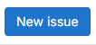
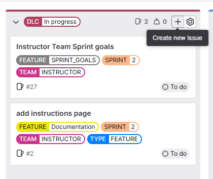
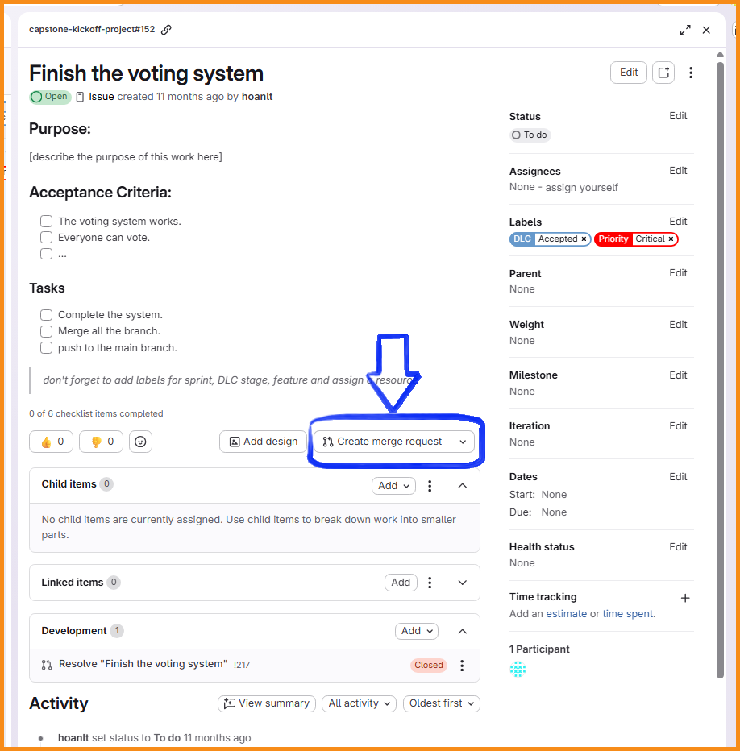
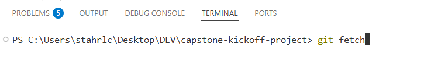
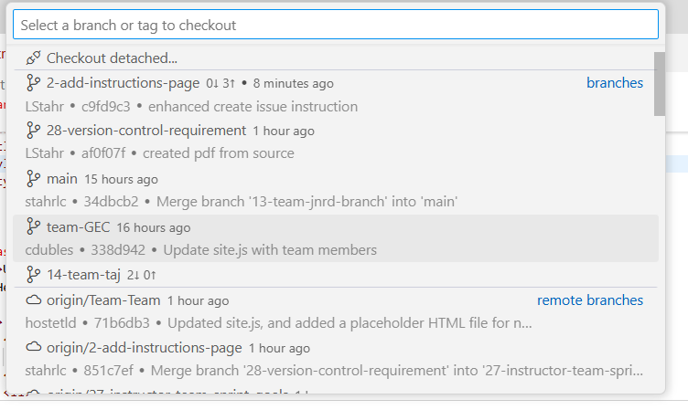
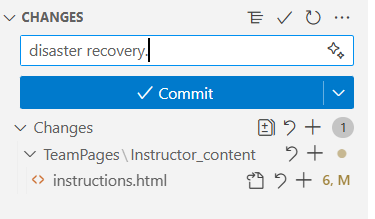

Here is some guidance for using GitLab in senior capstone.
Clone: Each team member will clone the project to your local environment. In VS Code, close all folders. Using the option to clone a project, clone this project.
One team member should: [1] create the team_page.html and [2] create the team label. Use the scoped label 'TEAM::your_team_name' to keep it clean.
Create your issue: The GitLab issue is where you define the work or value you will be delivering. Be clear and consise in generating the issue. Create the issue from the issue list (figure 1) or from the issue board (figure 2). Add at least one label for your team.

Figure 1: Create issue from the issue list.

Figure 2: Create issue on the issue board.
Create the Merge Request (MR): After the issue has been created, defined, assigned to a team member, and labeled create the branch and merge request. In the issue, click 'Create merge request'.

Navigate to your local IDE or GitHub Desktop.
Refresh the Branch list: In VS Code, do git fetch to refresh the list of remote repositories. (figure 3)

Figure 3: In the terminal, execute the command line fetch.
Pull/checkout the new branch: In the list of remote branches, find your new branch and click. This will make a local copy and check it out. (figure 4)

Figure 4: Find and select the new remote branch.
Do some stuff.
Disaster Recovery: Commit your work regularly. This is local ONLY. Push your work to the remote repo regularly.

Figure 5: Commit your work.Figure 6: Push to the remote repo.